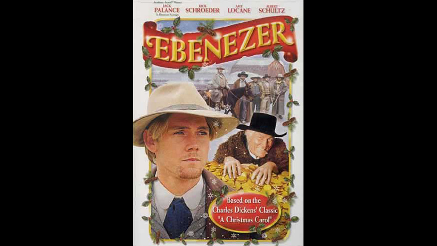

| Character | Actor |
|---|---|
| Ebenezer Scrooge | Jack Palance |
| Samuel Benson | Ricky Schroder |
| Bob Cratchitt | Albert Schultz |
| Clara Cratchitt | Susan Coyne |
| Tiny Tim Cratchitt | Joshua Silberg |
| Fred (Scrooge's nephew) | Daryl Shuttleworth |
| Jacob Marlowe (Marley) | Richard Halliday |
| Erica Marlowe (Marley) | Amy Locane |
| Spirit of Christmas Past | Michelle Thrush |
| Spirit of Christmas Present | Richard Comar |
| Role | Person |
|---|---|
| Director | Ken Jubenvill |
| Screenplay | Donald Martin |
Ebenezer Scrooge is the most greedy, corrupt and mean-spirited crook in the old West and he sees no value in "Holiday Humbug." But when the ghosts of Christmas Past, Present and Future open his eyes, Scrooge discovers that love and friendships are the greatest wealth of all.